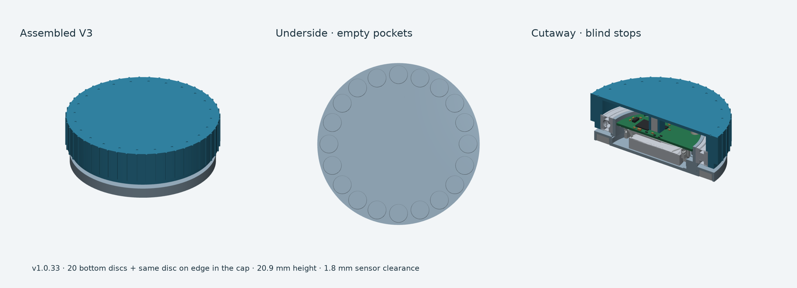
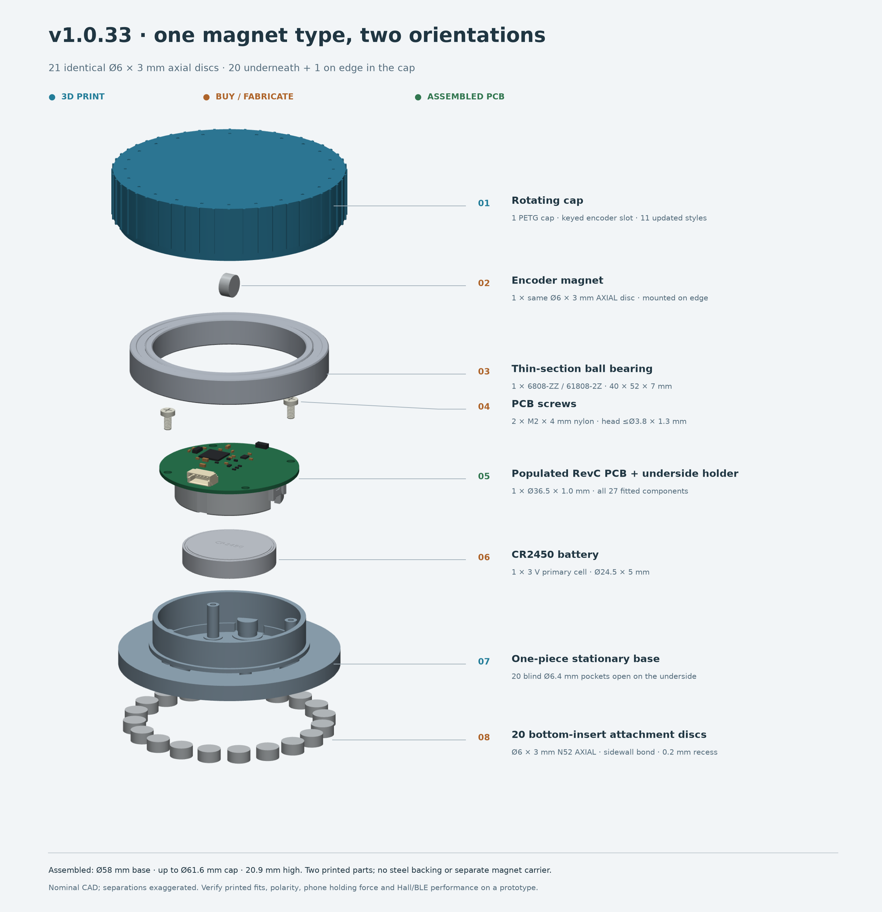
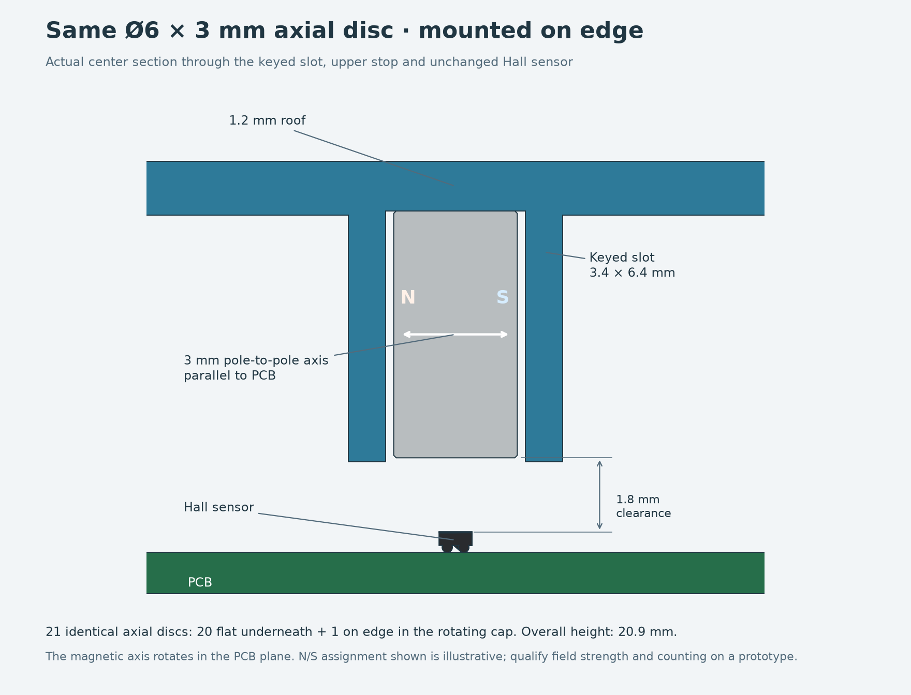

Twenty circular Ø6 × 3 mm axial magnets load from the underside of a one-piece base. Blind stops locate the discs; sidewall adhesive retains them. The enclosure uses two printed parts.



The encoder uses the same Ø6 × 3 mm axial disc, mounted on its edge in a keyed slot. Its magnetic axis rotates parallel to the PCB. Keeping the 1.8 mm sensor clearance makes the cap 4.5 mm taller. Attachment discs are nominally 0.2 mm below the phone-contact face. There is no steel backing or separate carrier in V3.
CAD and print checks describe a prototype. Verify actual fit, cured magnet retention, phone/case holding force, Hall counting and BLE/current before a batch.